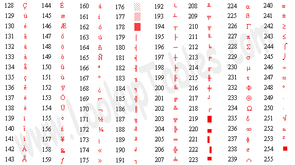

Why we need Data Types
Different data types are stored an processed different ways by the computer and as the computer has no way of deciding what data type is being processed we need to tell it, so it can perform the right processes to the data and can store the data correctly.
Data Types
| Type | Description | Example |
|---|---|---|
| Character | Single letter, digit or symbol | R, 8, @ |
| String | A string of alphanumeric characters | hello, w0R(d |
| Boolean | One of two values | True or False, 1 or 0 |
| Integer | Whole numbers | 13, -8, 565 |
| Real | Numbers with decimal or fractions | 87.65, -99.8 |
Key Points
There a 5 main data types character, string, boolean, integer and real.
All data types are represented as binary in a computer.
Representing Text
All data in a computer is represented by binary, 1s and 0s. There are many ways for us to represent characters in this format, but for this data to be read by all computers there needs to be a standard agreed upon set for representing characters, the original set was called ASCII.
American Standard Code for Information Interchange
In ASCII each character of the alphabet, numbers, symbols and control codes are represented by an agreed upon binary patterns. The first iteration of ASCII used a single byte (8 bits), it used 7 bits to represent the character and 1 bit as a parity bit, this allowed for the use of 128 different characters.
The next Iteration of ASCII used all 8 bits to represent characters, this allowed the use of 256 different characters. This new iteration is called Extended ASCII.
With only 8 bits to use you can only represent 256 characters, making it impossible to display all of the worlds alphabets and symbols. This led to ASCII being replaced by Unicode. Unicode originally only used 16 bits allowing 65536 characters. This 16 bit limitation was removed by using a series of code pages, each page represents a chosen language. Because of this Unicode has no limits on how many characters there is.
Boolean Data
Boolean is a data type that can only take one of two values, True or False using 1 for True and 0 for False. Boolean data only requires one bit to store a value but it normally uses an entire byte for convenience. Boolean data is used to flag if an event has occured.
Representing Positive Integers in Binary
| Column value | 128=27 | 64=26 | 32=25 | 16=24 | 8=23 | 4=22 | 2=21 | 1=20 |
|---|---|---|---|---|---|---|---|---|
| Binary number | 1 | 0 | 0 | 1 | 1 | 0 | 1 | 1 |
| Is | 128+ | 0+ | 0+ | 16+ | 8+ | 0+ | 2+ | 1 |
Which is 128+16+8+2+1=155 in denary.
To get from denary to binary you divide repeatedly by 2 and recording the remainder unti 0 is reached.
155 in denary to binary is:
155/2=77 r=1 This is the Least Significant Bit.
77/2=38 r=1
38/2=19 r=0
19/2=9 r=1
9/2=4 r=1
4/2=2 r=0
2/2=1 r=0
1/2=0 r=1 This is the Most Significant Bit.
So the denary number in binary is 10011011.
Key Points
Binary is a number system based on 2. The column values are the powers of 2 starting at 20
Denary is the number system we use on an everyday basis and is based on 10. The column values are the powers of 10 starting at 100
Integers are represented in binary using powers of 2. We add up the column value where there is a 1 in the binary number to get the denary equivalent.
To convert from denary to binary, you divide by 2 repeatedly and write down the remainder at each stage.
Representing Negative Integers in Binary
There are tow ways to represent negative integers in binary.
Sign and Magnitude
Sign and magnitude works like the denary convention of representing negative integers by putting a + infront for positive and - for negative. However in sign and magnitude the sign takes up the Most Significant Bit. This Most Significant Bit becomes the sign bit. To store the sign as a binary value it is 0 for + and 1 for -.
| Column value | Sign bit | 64=26 | 32=25 | 16=24 | 8=23 | 4=22 | 2=21 | 1=20 |
|---|---|---|---|---|---|---|---|---|
| Binary number | 1 | 0 | 0 | 1 | 1 | 0 | 1 | 1 |
| Is | - | 0+ | 0+ | 16+ | 8+ | 0+ | 2+ | 1 |
Which is -27 in denary.
| Column value | Sign bit | 64=26 | 32=25 | 16=24 | 8=23 | 4=22 | 2=21 | 1=20 |
|---|---|---|---|---|---|---|---|---|
| Binary number | 0 | 1 | 0 | 1 | 1 | 0 | 1 | 1 |
| Is | + | 64+ | 0+ | 16+ | 8+ | 0+ | 2+ | 1 |
Which is +91 in denary.
In sign and magnitude because the MSB is taken up by the sign bit, using 8 bits means that the highest value that can be represented is +127 and the lowest value to be -127.
Two's Complement
In two's complement the most significant bit becomes negative for example using 8 bits the most significant bit has the value of -128.
| Column value | -128=27 | 64=26 | 32=25 | 16=24 | 8=23 | 4=22 | 2=21 | 1=20 |
|---|---|---|---|---|---|---|---|---|
| Binary number | 1 | 0 | 0 | 1 | 1 | 0 | 1 | 1 |
| Is | -128+ | 0+ | 0+ | 16+ | 8+ | 0+ | 2+ | 1 |
Which is -128+16+8+2+1=-101 in denary.
| Column value | -128=27 | 64=26 | 32=25 | 16=24 | 8=23 | 4=22 | 2=21 | 1=20 |
|---|---|---|---|---|---|---|---|---|
| Binary number | 0 | 0 | 0 | 1 | 1 | 0 | 1 | 1 |
| Is | 0+ | 0+ | 0+ | 16+ | 8+ | 0+ | 2+ | 1 |
Which is 16+8+2+1=27 in denary.
The highest value that can be stored in 8 bit two's complement is 127 and the lowest is -128.
Key Terms
Most Significant Bit (MSB)
The bit in a multiple-bit binary number with the largest value.
Key Points
Sign and Magnitude: The MSB is replaced by a sign, 1 for - and 0 for +. This makes arithmetic within the computer quite complex.
Two's Complement: The MSB is considered negative. The computer is able to deal with this number format easily and it makes processing negative values relatively straightforward for the arithmetic and logic unit.
Representing Numbers in Hexadecimal
Hexadecimal is another number system with a base of 16. Computers do not work in hexadecimal but it is often used to represent numbers stored in a computer because it is simpler for humans to read and remember. This is because it gives us a direct representation of binary since the base value 16=24 or four bits a nibble. This means 8 bits is represented by 2 hex columns, this makes it easier to remember as 2 digits is easier to remember than 8 1s and 0s. One problem with hex is that we only have the digits 0-9 when we need 16 so we are missing 5 digits, to make up these missing five we use A-F.
| Column value | 128=27 | 64=26 | 32=25 | 16=24 | 8=23 | 4=22 | 2=21 | 1=20 |
|---|---|---|---|---|---|---|---|---|
| Binary number | 1 | 0 | 0 | 1 | 1 | 0 | 1 | 1 |
| Is | 9 | B |
10011011 in hex is 9B.
Key Terms
Hexadecimal
A number system with a base of 16.
KeyPoints
Hexadecimal is number system based on 16, column values are powers of 16.
Hexadecimal requires 16 symbols, these are 0-9 and A-F.
Representing Images in Binary
A simple black and white image is made up of black an white dots. The character can be represented in binary by simply choosing 1 for black and 0 for white. Real images are more complex than black and white, they have several colours that need to be represented. In a single bit you can only represent only 2 colours. For more colours you use more bits. 2 bits can represent 4 colours, 3 bits can represent 8 colours, 8 bits can represent 256 colours and 16 bits can represent 65536 colours.
The information about the image is stored in Metadata. Metadata includes information about the number of bits per pixel, colour depth, resolution of the image in dots per inch and height and width in pixels. Image files come in 2 major formats, one of these is a set of pixels in bitmap form, the other is a vector form. In vector graphics, format images are made up of primitive shapes and with other information about the shape, including a set of control points the shape must pass through.
When enlarged bitmap image becomes pixelated, the pixels become larger and more visable and we can see the blocks that make up the image. This is not a problem with vector graphics as the infromation that makes up the shapes is recalculated and the primitive shapes redrawn. Because of this a larger bitmap image with a high resolution takes more data to store and is linked to the size and resolution of the image.
Key Terms
Metadata
The information about the image that allows the computer to interpret the stored binary accurately to reproduce the image. This must contain the width and height in pixels and the colour depth in bits per pixel
Colour Depth
The number of bits used for each dot or pixel. The more bits, the greater the number of colours that can be represented.
Resolution
The number of pixels or dots per unit, i.e dot per inch.
Representing Sound in Binary
Sound is an analogue data type meaning it varies continuously, if a computer is going to store and process sound the analogue wave needs to be converted to digital (binary). To convert the sound into digital, the sound is sampled at set intevals, the values of the samples ae used to represent the sound in digital format.
The sample rate determines the quality of the sound recorded. If you sample at a low rate, then less samples are taken meaning it is a poor representation of the original sound. If you sample at a high, more samples are taken meaning it is a better representation of the original sound.
Another factor that effect the quality of the sound recorded is the Bit-rate, this is the number of bits given per sample. the higher the bit-rate the better the quality of the recorded sound. There is a trade off the higher the bit rate and the higher the sample rate increases the size of the sound file.
Key Terms
Sample Rate
The number of times the sound is sampled per second measured in Hertz Hz.
Bit Rate
The number of bits per given time period available for each sample measured in kilobits/s